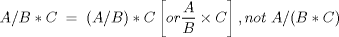

| Chapter 2. Computing and Subscripted Variables | ||
|---|---|---|
 |  | |
| Chapter 2. Computing and Subscripted Variables | ||
|---|---|---|
| | | |
Table of Contents
The ability to perform a variety of computing operations and the concept of subscripted variables have been included to provide additional capability in the APT language.
The computing feature allows a given quantity to be expressed as the result of one or more arithmetic operations. For example, the statement:
A = 2 + 6 * SQRTF(4)
specifies that the symbol A is to be assigned the value 14 (the result of multiplying 6 times the square root of 4 and adding 2). A computing statement may be made up of some combination of the following:
Scalars are one-dimensional quantities that can be operated on as is or combined to define a geometric quantity. Scalars, sometimes noted as "scalar variables", can be multiply-defined, that is, the value of the scalar can be reassigned by a new computing statement.
Scalar symbols, numbers and arithmetic operators may be combined to form an arithmetic expression.
2 * A + B
3. * A + B/ (4. * C)
A + B ** 2 + 3 * C
In the APT language, an arithmetic expression may replace a scalar or a subscript. A scalar symbol or a variable my be assigned a value by an arithmetic expression.
F = 2 * A + B C = 3 * A + B / (4. * C) H = 3.14159
Parentheses may be used in arithmetic expressions to indicate the order of the operations. Within parentheses, or where parentheses are omitted, the order of operations is as follows:
Table 2.2. Operator Precedence
| Operator | Precedence |
|---|---|
| Evaluation of Functions | 1 (highest) |
| ** | 2 |
| * / | 3 |
| + - | 4 (lowest) |
Among operations of the same priority, processing is done from left to right.

For example the following expressions are equivalent:
F = A * B + C / D * A ** 2 F = (A * B) + (C / D) * (A ** 2)
An arithmetic expression enclosed in parentheses can be substituted for a scalar value (where a scalar value is appropriate) in and APT statement except RESERV/.
P1 = POINT/ (A + 2. * B), Y, (-3 + E)
However, an arithmetic expression can never appear to the left of an equal sign, except when used to denote a subscript value.
| Legal | Not Legal |
|---|---|
| A(I + 2) = D * C | I + 2 = D * C |
| D = A(I + K + 1) | CALL/ MAC1, B + C = A, D = E / 2, F = G + H |
| CALL/ MAC2, B = A(I + K * 2) |
The following functions are available in the APT language:
Table 2.3. Arithmetic Functions
![[Note]](images/note.png) | Note |
|---|---|
The arguments to SINF, COSF and TANF are in degrees. ANGLF, ATANF and ATANF2F return degrees. |
The output of each of these functions is single-valued; hence, these functions can be used to define an arithmetic expression.
R = A * SQRTF(C ** 2 + D ** 2) / E
| | | |
| 1.3. Word Conventions |  | 2.2. Subscripted Variables in the APT Language |